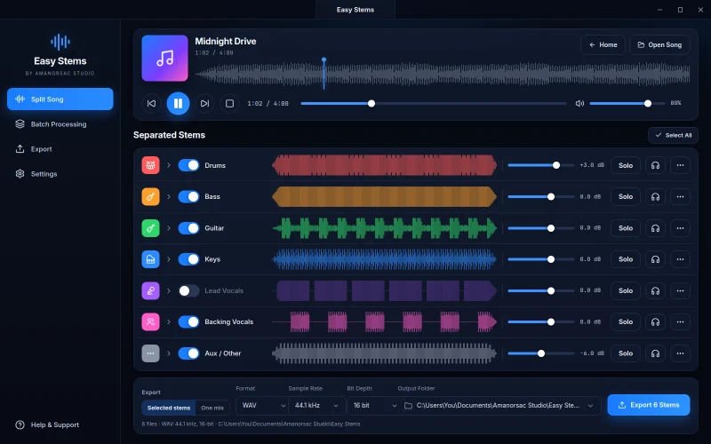
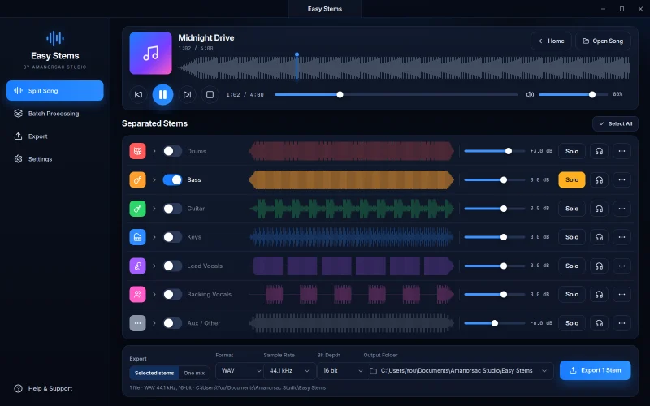
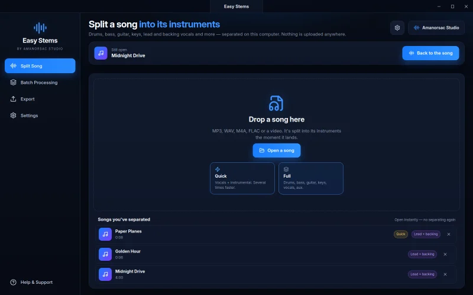
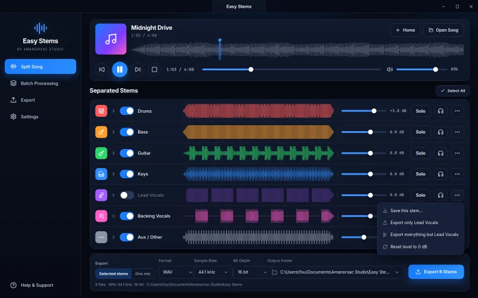
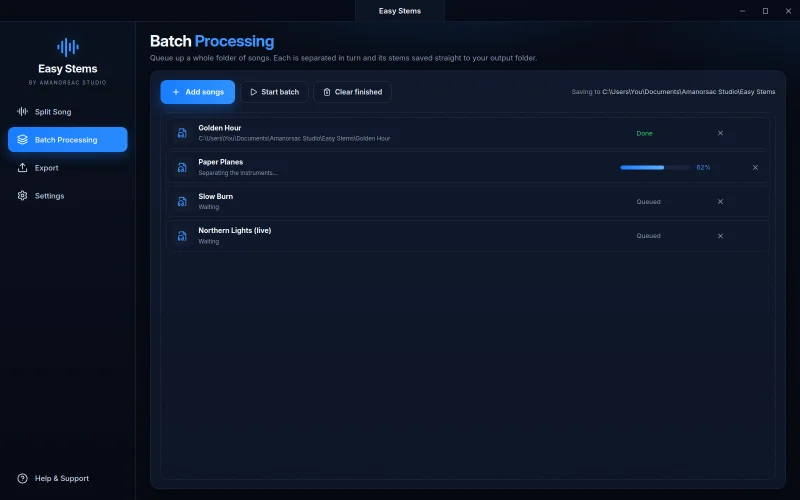
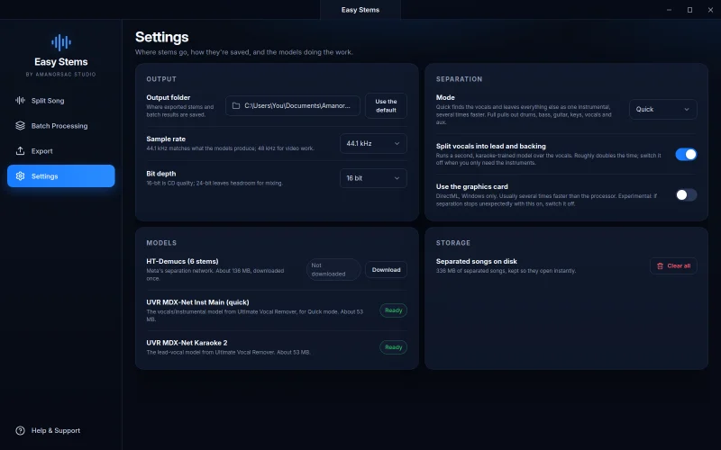

New · Windows and Mac
Easy Stems
Any song. Every instrument. Your computer.
Drop a track and Easy Stems hands you the drums, bass, guitar, keys, lead vocals, backing vocals and everything else as separate tracks. Nothing is uploaded. Nothing to learn.
$21 once · Windows 10/11, and Mac with Apple silicon or Intel · version 0.1.8 · installs through Amanorsac Hub
Every Song Is a Band
Stems are the raw material of music work, and almost nobody has them. Labels rarely release them, and when they do it's years late and for a handful of hits. So everyone who wants the vocal, the drums or the bass out of a finished record has had three bad options: upload it to a stem website, buy a repair suite that costs hundreds, or learn to drive a command-line tool.
Easy Stems puts the best open models behind one button on your desktop. The audio stays on your machine, and it goes further than the usual four stems: six instruments, with the lead vocal lifted off the backing vocals.
The Split
One File In. Seven Tracks Out.
Keep scrolling and pull the mix apart, the way Easy Stems does.
Try It
Hear It as You Build It
Every stem plays live. Switch one off, solo another or ride a level while the song runs, with no waiting and no re-render. These are the real screens.



Seven stems, each with its own switch, level, solo and headphone button.
Features
Drop a Song, Get the Band
Everything here is in the app today.

Quick or Full
Quick When You're in a Hurry
Quick runs a lighter model that knows vocals and everything else, several times faster. Pick it for an acapella or a backing track.
Full runs the six-instrument model when you want the whole band. Either way, the song starts playing the moment you drop it and carries on from the same spot when the stems arrive.

Just One Part, or All but One
The Part You Came For
Solo a stem and export it alone. Switch one off and export everything else as one file. An instrumental with no lead vocal, a drumless practice mix or a bass-only track is two clicks.
Studio-Grade Files
Selected stems as separate files, or everything you can hear as one mix. WAV at 44.1 or 48 kHz, 16 or 24 bit, named and foldered, ready to drag into any DAW.

A Folder at a Time
Queue a whole set in Batch, walk away, and come back to stems for every song.

Separate Once
Every song you split stays in your library and reopens instantly. On Windows, a graphics card makes it faster, and it falls back to the processor on its own.
How It Compares
Local, Six Stems, and the Vocals Apart
Repair suites are repair tools with a separator in them. Stem websites are a separator with your audio on their servers. Easy Stems is a separator built for musicians, on your own machine, with the whole band in it.
| Easy Stems | Stem websites | Repair suites | |
|---|---|---|---|
| Where your audio goes | Stays on your computer | Uploaded to their servers | Stays on your computer |
| Stems | Six: drums, bass, guitar, keys, vocals, aux | Usually four | Usually four |
| Lead and backing vocals apart | Yes | Rarely | No |
| Live mixer while it plays | Mute, solo and level on every stem | Preview only | Inside the suite |
| Quick vocals-and-instrumental mode | Yes | Yes | No |
| Batch | Yes | On paid tiers | Through the host app |
| Price | $21, once | Monthly, or per minute of audio | Part of a suite, hundreds of dollars |
How It Works
Three Steps
Drop a song
MP3, WAV, M4A, FLAC, OGG, AAC, or the sound from an MP4 or MOV video. It starts playing straight away.
Pick Quick or Full
Vocals and the rest in a hurry, or the whole band taken apart.
Mute, solo, level, export
Build the mix you need while it plays, then save the stems or one file.
Tech Specs
Version
0.1.8.
Stems
Drums, bass, guitar, keys, lead vocals, backing vocals and aux (everything else).
Models
Meta's HT-Demucs for Full. Ultimate Vocal Remover's MDX-Net models for Quick and for the lead and backing split.
Model Downloads
Once: 136 MB for Full, 53 MB for Quick, 53 MB for the vocal split.
Input
MP3, WAV, M4A, FLAC, OGG, AAC, and the audio track of MP4 or MOV.
Output
WAV, 44.1 or 48 kHz, 16 or 24 bit. Stems as separate files or one mix.
Windows
Windows 10 or 11, 64-bit. Any x64 processor, 8 cores or more recommended. Graphics card optional, through DirectML.
Mac
macOS 12 or later. Separate builds for Apple silicon and Intel; the Hub picks the right one.
Memory
8 GB minimum, 16 GB recommended.
Disk
300 MB for the app and models, plus about 300 MB for each song kept in the library.
Privacy
Audio never leaves the computer. The only network use is downloading the models once.
Files
Documents / Amanorsac Studio / Easy Stems, a folder per song, unless you pick somewhere else.
Questions
Does my audio go anywhere?
How long does a song take?
How clean is the split?
Can I get just one part?
Is it a subscription?

Easy Stems
Take Your Favourite Record Apart Tonight
Any song, every instrument, on your own computer. $21 once, for Windows and Mac.
Made by Amanorsac Studio. Runs on open models from Meta and the Ultimate Vocal Remover project.
Easy Stems
$21
Bought once, for Windows and Mac. It installs through Amanorsac Hub, which picks the right build for your computer, and updates arrive there too.
How to Pay
In Ghana, pay with MTN MoMo. Everywhere else, pay by card.
Ghana · MTN MoMo
Pay at the studio's MoMo link, then send the screenshot.
- Open the link or scan the code. The request is to Stephen Amanor Sackey, 024 685 8947.
- Send the price of Easy Stems. Not sure of the cedi amount? Ask on WhatsApp first.
- Send the screenshot to 024 685 8947 on WhatsApp with the app's name and the email of your account here. Your code comes back the same day and unlocks it in My Apps.

Everywhere Else · Card
Pay by card, or ask us anything first.
Use the Buy button above. It takes Visa, Mastercard and Apple Pay in US dollars, and Easy Stems is in My Apps the moment it clears.
Questions before you buy? Scan the code and message the studio on WhatsApp.
Message on WhatsApp